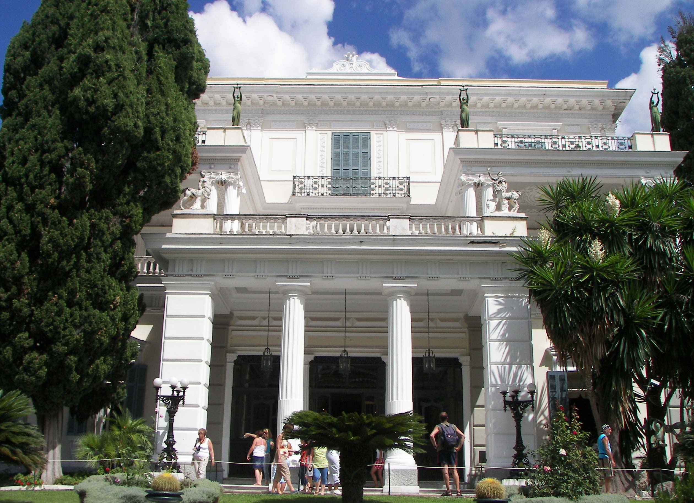
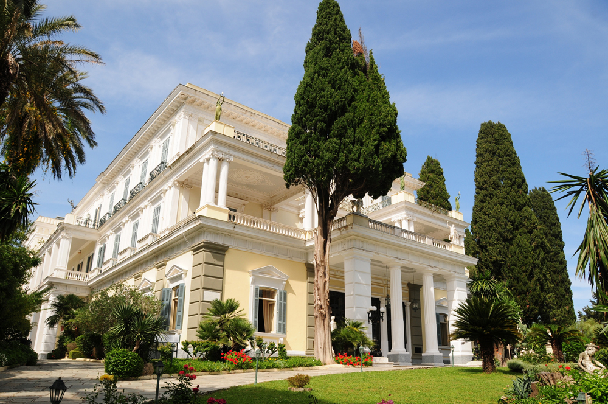

Ахиллион — дворец на острове Керкира, Греция, построенный императрицей Австрии Елизаветой по предложению австрийского консула Александра Ватцберга. Дворец возведён в 1890 году, через год после гибели сына Елизаветы и наследника австрийского престола Рудольфа.


Родосская крепость — основное оборонительное сооружение средневекового города Родос, бывшая резиденция великого магистра Родосского ордена.